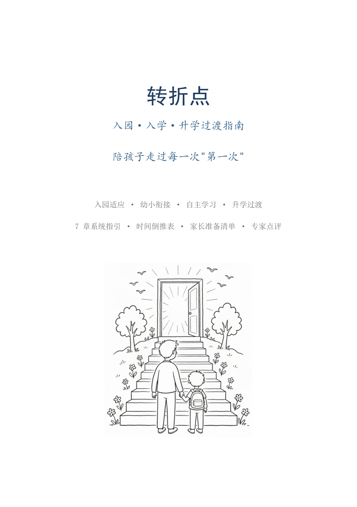
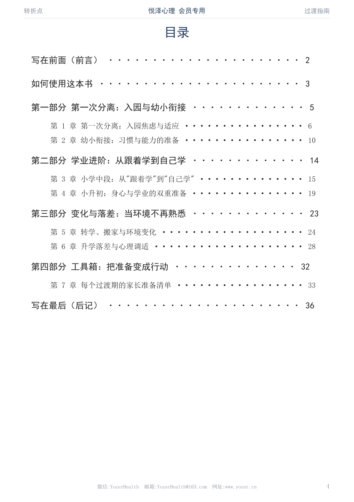
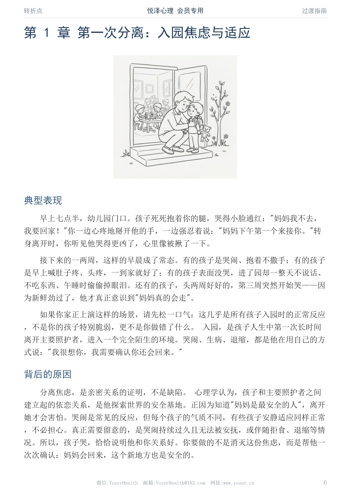
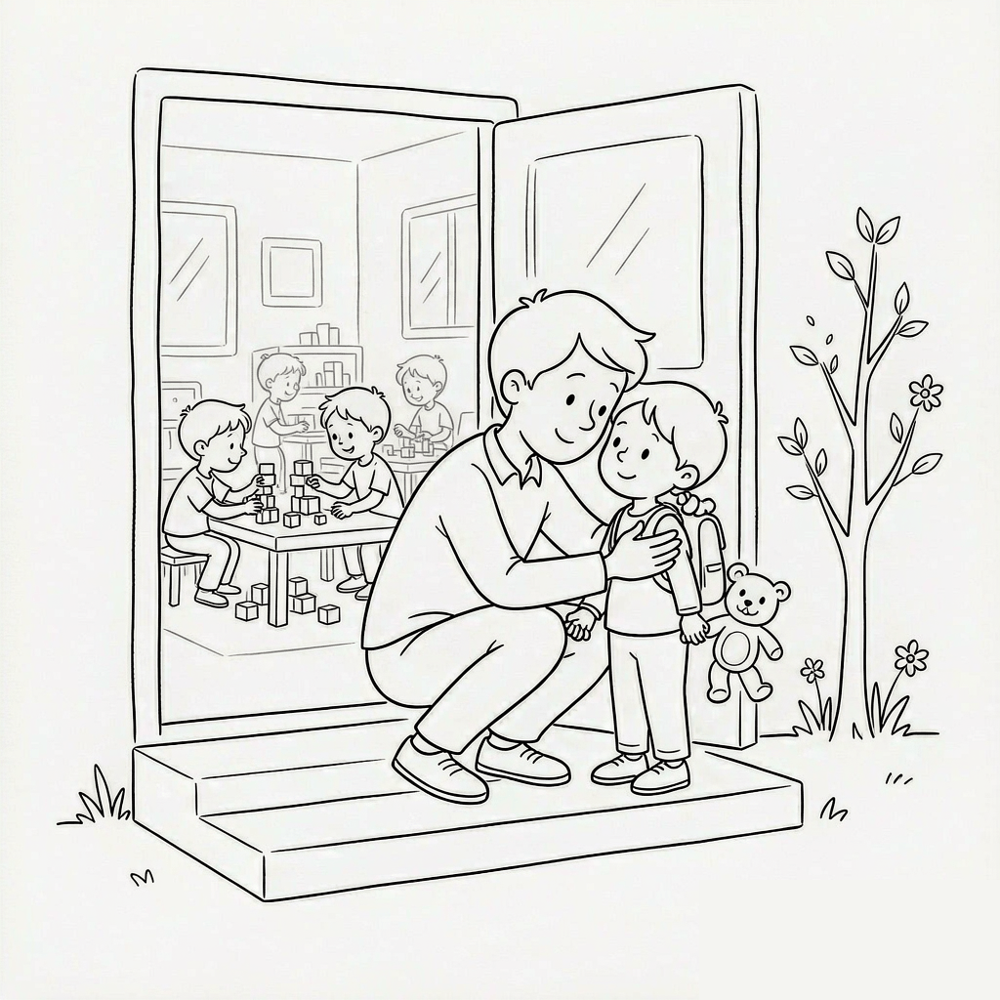

01
第一次分离
2 章入园焦虑、幼小衔接——陪孩子走好最初的两道坎。
陪孩子走过每一次"第一次"
孩子的成长不是一条平滑的线，而是一串串台阶。入园、幼小衔接、小学中段、小升初、转学、升学落差——每一次转折，都是孩子生活世界的重新洗牌。这本书按时间线组织，每个过渡期都配时间倒推表和家长准备清单，让你提前准备、从容应对，把每一次转折点都走成孩子成长路上稳稳的一级台阶。

封面与内页样张来自电子书原稿
翻开这本书之前，先听听作者想说什么
孩子的成长，不是一条平滑的线，而是一串串台阶。两次台阶之间，有一道坎，我们叫它"过渡期"。
入园、幼小衔接、小学中段、小升初、转学、升学落差——每一次转折，都是孩子生活世界的重新洗牌：新的老师、新的同伴、新的规则、新的期待。对大人来说，这只是一次"换了个环境"；可对孩子来说，那是整个熟悉的世界被轻轻抽走，他要在陌生里重新找到自己的位置。
过渡期之所以值得单独写一本书，是因为三个理由。
第一，过渡期是问题的高发期。平时藏着的适应困难、情绪敏感、分离焦虑，往往会在换环境的那几周集中冒出来：入园时每天哭闹、上小学后突然尿床、升初中后沉默不语。这些不是孩子"退步了"，而是他在用症状告诉你："我有点应付不来。"看懂这一点，你就不会因为误判而错怪他。
第二，过渡期是黄金干预窗口。适应是有规律的：孩子在陌生环境里的心理变化，往往沿着可预期的阶段推进。如果你提前知道这条曲线长什么样，就能在他最难的那一刻，恰好扶一把——而不是等他摔疼了才后悔。过渡期的可塑性极强，一次被好好接住的转折，会成为孩子一辈子的心理资产。
第三，过渡期可以被准备，而不是只能硬扛。很多家长的痛点，是"临时抱佛脚"：开学前一周才想起要调整作息，报到前一天才告诉孩子要换学校。准备，是过渡期最有力的工具。本书每一章都配了"时间倒推表"和"家长准备清单"——你不必记住所有理论，只要照着清单，在合适的时间做合适的事。
这本书以升学时间线为主线，从孩子第一次离开家，一路走到小升初的青春期门口；其中第 5、6 章另覆盖转学搬家、升学落差这类可发生在任何学段的常见变化。它既讲孩子在每个阶段会经历什么，也讲你该在什么时间点做什么准备。它不追求让你成为完美的父母，只希望在下一次转折来临时，你能心里有数、手上有招、脚下有步骤。
过渡不是一场需要打赢的仗，而是一段需要陪着走的路。孩子需要的，从来不是一个把他拽过坎的大人，而是一个站在坎边、相信他能迈过去的人。
按“第一次分离—学业进阶—变化落差—工具箱”四部分编排，沿孩子成长时间线展开
入园焦虑、幼小衔接——陪孩子走好最初的两道坎。
小学中段自主学习、小升初——从跟着学走向自己学。
转学搬家、升学落差——当环境不再熟悉时如何调适。
把六个过渡期的准备汇成一张可以照着执行的清单。
统一的章节结构，先讲清孩子会经历什么，再给出可以照着做的时间表与清单
从家长熟悉的真实场景切入，看懂孩子在过渡期的反应
用发展心理学讲清机制，不焦虑、不贴标签
每条配实例情景，含错误示范与正确示范
提前多久做什么，一张表看清准备节奏
可勾选的行动清单，贴在冰箱上照着做
点破常见误区，避免越想帮忙越添乱
从专业角度收束，讲清原理与求助边界
7 章 · 附真实页码 · 点击上方按钮可快速跳转试读
以下为第 1 章节选，体验"原理 + 建议 + 时间倒推表 + 清单"的编排
早上七点半，幼儿园门口。孩子死死抱着你的腿，哭得小脸通红："妈妈我不去，我要回家！"你一边心疼地掰开他的手，一边强忍着说："妈妈下午第一个来接你。"转身离开时，你听见他哭得更凶了，心里像被揪了一下。
接下来的一两周，这样的早晨成了常态。有的孩子是哭闹、抱着不撒手；有的孩子是早上喊肚子疼、头疼，一到家就好了；有的孩子表面没哭，进了园却一整天不说话、不吃东西、午睡时偷偷掉眼泪。还有的孩子，一开始没哭，直到新鲜劲过去，才在第三周前后突然开始哭——因为他这时才真正意识到"妈妈真的会走"。
如果你家正上演这样的场景，请先松一口气：这是很多孩子入园时都会有的正常反应，不是你的孩子特别脆弱，更不是你做错了什么。入园，是孩子人生中第一次长时间离开主要照护者，进入一个完全陌生的环境。哭闹、生病、退缩，都是他在用自己的方式说："我很想你，我需要确认你还会回来。"
分离焦虑，是亲密关系的证明，不是缺陷。心理学认为，孩子和主要照护者之间建立起的依恋关系，是他探索世界的安全基地。正因为知道"妈妈是最安全的人"，离开她才会害怕。哭闹是常见的依恋表达，但每个孩子的气质不同，有些孩子安静适应同样正常，不必担心——不哭并不代表关系疏远。真正需要留意的，是哭闹持续过久且无法被安抚，或伴随拒食、退缩等情况。所以，孩子哭，不必过分紧张；你要做的不是消灭这份焦虑，而是帮他一次次确认：妈妈会回来，这个新地方也是安全的。
"哭闹"背后，是三种不同的害怕。入园焦虑听起来是一种情绪，拆开看其实是三种：一是分离恐惧——怕妈妈走了就不回来；二是陌生恐惧——怕陌生的老师、小朋友、规则和环境；三是失控感——怕自己无法掌控这个新世界，不知道什么时候吃饭、什么时候睡觉、想上厕所怎么办。看懂是哪一种在主导，你才能对症下药：分离恐惧要靠"稳定的告别与重逢仪式"来化解，陌生恐惧要靠"提前熟悉"来降低，失控感要靠"可预期的流程"来重建。
适应是一条曲线，不是一条直线。很多家长以为孩子适应幼儿园是"一天比一天好"，其实真实的曲线往往是：头几天靠新鲜感撑着，还好；第一到第二周新鲜劲过去，哭闹往往加剧，有些孩子到第三周才明显爆发；两到四周后，才真正慢慢适应。理解这条"先好后坏再好"的曲线，你才不会在孩子第二、三周突然大哭时以为"前功尽弃"。那是他真正开始适应的标志，不是倒退。
建议一：提前"预习"，把陌生变成熟悉。
陌生恐惧最好的解药，是熟悉。入园前的一两个月，就可以开始铺垫：带孩子路过幼儿园，指给他看"这是你以后上幼儿园的地方"；讲关于上幼儿园的绘本，让他在故事里预演；如果可能，提前参加园里的亲子活动，让他认识老师和教室。熟悉感每多一分，入园那天的恐惧就少一分。
建议二：建立稳定的"告别仪式"，说了就走，千万别偷偷溜。
分离恐惧最怕的是"不确定"。孩子需要一套可预期的告别流程：蹲下来抱一抱，看着他的眼睛说"妈妈去上班，睡完午觉、吃完点心就来接你"，然后坚定地离开。关键是"说了就走"——千万不要因为孩子哭就偷偷溜走，也不要一步三回头、反复拥抱。偷偷消失会让孩子觉得"妈妈随时可能不见"，更加不安；反复道别则会把告别拖长，强化他的哭闹。
建议三：接园后，只聊开心，不追问"有没有哭"。
很多家长接园后第一句是："今天有没有哭？有没有人欺负你？"这些问话看似关心，其实在暗示"幼儿园是让你受委屈的地方"。更好的做法，是问正向、具体的问题："今天吃了什么好吃的？""玩了什么游戏？""老师讲了个什么故事？"引导他把注意力放在积极的体验上。孩子如果主动提起哭闹、受了委屈，你再认真听、共情回应，不要否认他的感受。
建议四：给孩子一个"过渡性物品"，把家的味道带在身边。
对年幼的孩子，一个熟悉的安抚物——一块小毛巾、一个玩偶、一件妈妈穿过的小衣服——能在新环境里提供强烈的心理安慰。这叫"过渡性客体"，是孩子从家到园之间的情感桥梁。别觉得这是"坏习惯"，它恰恰是孩子自我安抚能力的起点。事先和幼儿园老师沟通好，允许孩子带着，慢慢他也就不需要了。
[ ] 作息已调整到接近幼儿园节奏
[ ] 孩子能自己吃饭、表达要上厕所
[ ] 已提前参观幼儿园、认识环境
[ ] 告别仪式的话术全家一致
[ ] 准备好安抚物与备用衣物
[ ] 和家人约定：接园后不追问"哭没哭"
[ ] 与老师沟通孩子的特点与安抚方式
偷偷溜走。趁孩子不注意消失，会破坏他对"妈妈会回来"的信任，让焦虑更顽固。
送两天又舍不得。孩子一哭就不送了，等于告诉他"哭可以不用去"，反而延长适应期。要温和而坚定。
接园后负面追问。"有没有哭""有没有人欺负你"，会强化孩子对幼儿园的负面记忆。
拿别人家孩子比较。"你看人家都不哭"，只会让孩子觉得自己的害怕是丢人的，更不敢表达。
以为第三周哭闹是倒退。那恰恰是新鲜感消退、真正开始适应的标志，坚持住就好。
入园适应，本质上是孩子完成人生第一次"在世界里重新定位"的过程。发展心理学告诉我们，安全依恋的孩子不是不哭，而是哭过之后能被安抚、能重新投入探索。所以，你的目标不是让孩子"不哭"，而是让他"哭过之后，还能重新笑着走进教室"。这中间起决定作用的，是你和他之间那份稳定的、可预期的连接。
也要提醒：绝大多数入园焦虑在几周内会自然缓解。但如果孩子持续两周以上严重哭闹，或出现拒食、严重睡眠紊乱、明显退缩，就超出了"正常适应"的范围，请不要独自硬扛，及时寻求幼儿心理或发育行为儿科专业人士的帮助，排查是否存在更深的适应障碍或发育问题；若出现攻击、伤人行为，则须立即求助、不必等待。能在孩子第一次离开家时，稳稳地接住他，是你能给他的、关于"世界是安全的"的最初一课。
—— 以上为节选，完整内容见电子书 ——
真实排版预览 · A5 竖版 · 黑白简笔画插图



图片为文档内嵌样张，仅作版式展示
| 项目 | 说明 |
|---|---|
| 书名 | 转折点：入园·入学·升学过渡指南 |
| 副标题 | 陪孩子走过每一次"第一次" |
| 读者对象 | 3—12 岁儿童的家长与主要照护者 |
| 篇幅 | 7 章 · 约 1.8 万字 · 37 页 |
| 版本 | A5 版（148×210mm） |
| 格式 | PDF 电子书 |
| 插图 | 8 张黑白简笔画题图 |
| 结构 | 四部分 · 每章七步 · 时间倒推表 + 准备清单 |